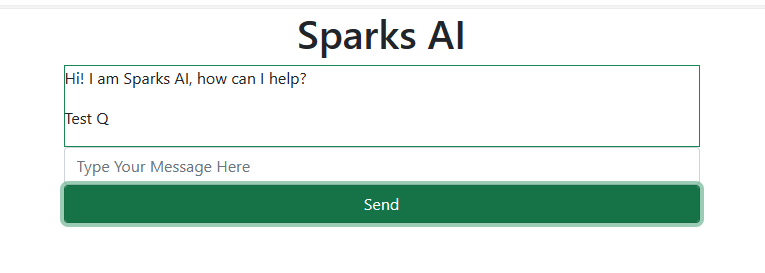
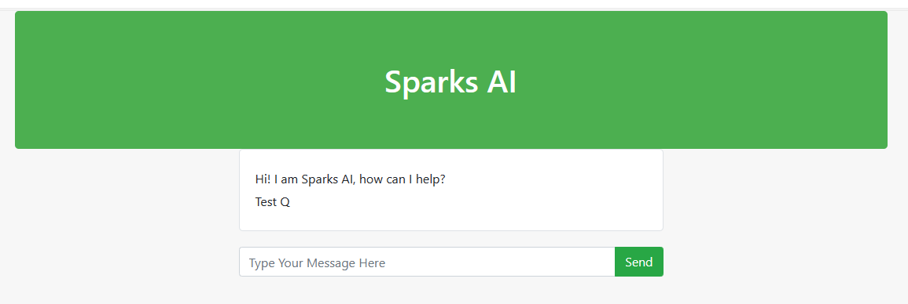
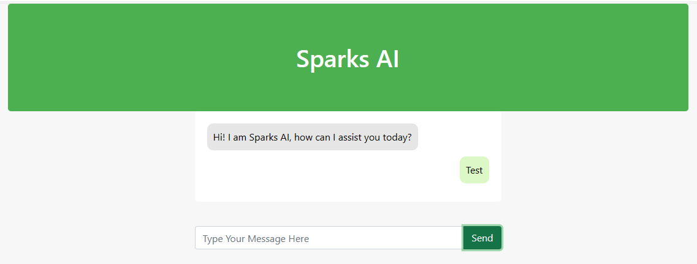
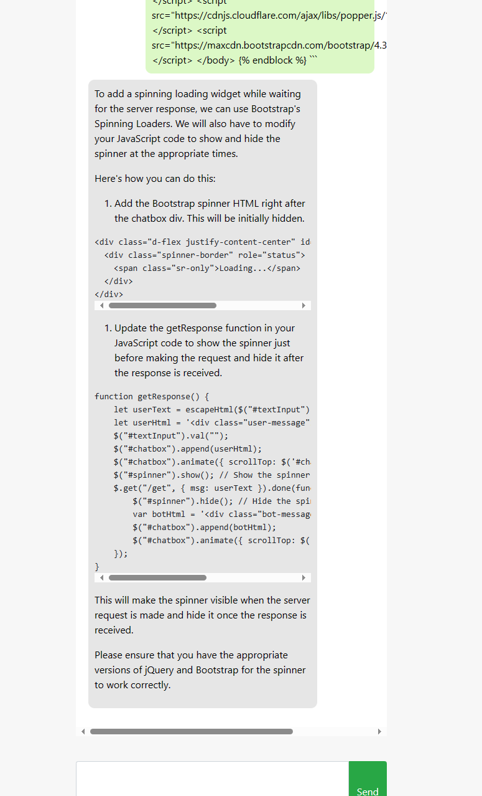
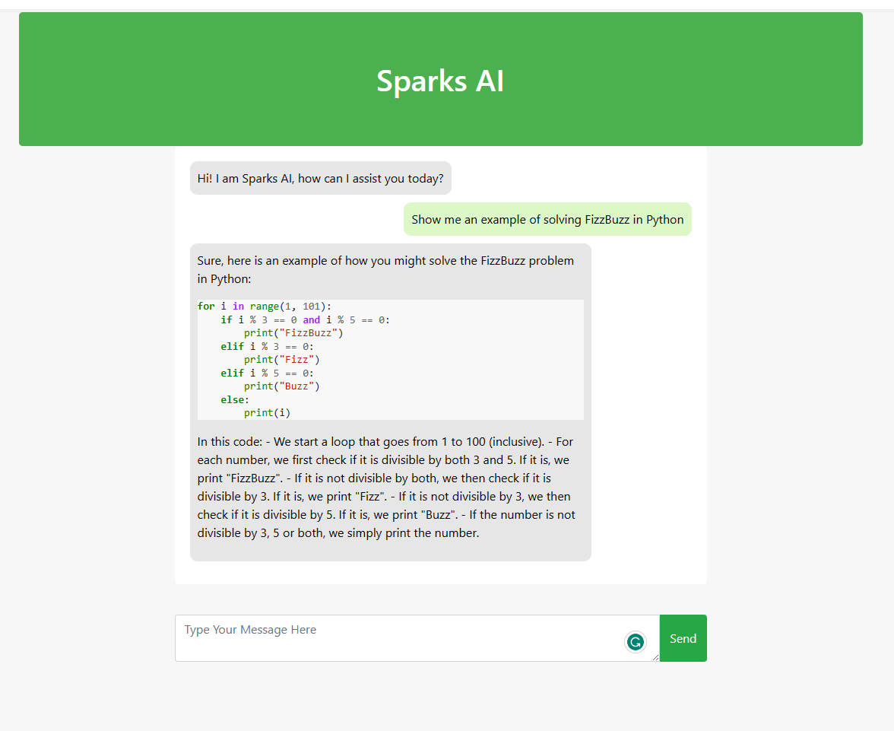

AI Resume Builder is gone; long live Sparks AI.
While initially I was thinking to build a dedicated AI to help review and build resumes, in true agile fashion I’ve decided to prioritize getting a functional end-to-end AI prototype up and running first, one that uses the ChatGPT API to generate text. Later, I can shift my focus to incorporating additional features, like resume review and building.
Guess what? I’ve done it! I’ve created a working web app using Python’s Flask framework. Here’s where Sparks AI stands currently:
A Flask web app that is hosted locally.
ChatGPT API is integrated with the web app chat interface.
Google OAuth integration that ensures a secure login without the hassles of password management.
These three features provide a strong foundation to build upon. My immediate priorities are:
Deploying to the cloud for easier sharing (probably to AWS; but will consider Azure and GCP).
Adding chat history to help the AI remember previous conversations with the user.
Incorporating a vector database to support the AI in answering questions.
- Implementing document upload and web scraping to enrich the vector database.
Developing a multi-agent model to enhance the AI’s ability to use the tools and data provided to it, possibly leveraging Microsoft’s Autogen Python package
Finally, integrating my original AI resume builder idea as additional features.
Recent Insights
I extensively utilized ChatGPT and GitHub Copilot during the development of the initial web app. These tools proved highly beneficial, but they had their limitations. Let me elaborate:
Key Insights from AI-Powered Development:
Bridging Skill Gaps: Building a project from scratch demands comprehensive knowledge, from back- to front-end. The AI assistance helped me fill my own gaps, particularly in front-end development, to get a minimal viable project off the ground extremely quickly.
Facilitating Learning: The AI not only filled gaps but also provided insights into its operations, fostering a deeper understanding compared to static tutorials. It guided me in comprehending why specific actions were taken, which helped me direct future work and debug issues quickly.
Still not perfect Despite its role in filling gaps, the AI fell short of replacing the need for genuine expertise, in particular for complex system questions.
Case study: Chat Front-end
One of the tasks I had little experience with was front-end development, especially in rendering the chat interface (R Shiny and Python Streamlit are the closest I’ve come before). While I had a general idea of what I wanted, implementing it was a challenge. To kickstart the process, I shamelessly borrowed code from a comprehensive tutorial on implementing ChatterBot in Flask this one was where I grabbed the initial template.

This version had a few issues:
Minimal styling with a simple title.
Absence of chat bubbles.
User and AI messages styled the same and positioned on the same side of the chatbox.
To address these issues, I pasted my entire HTML file into ChatGPT 3.5 and asked it to enhance the styling. Here’s the result.

This version had improved overall styling but still faced issues 2 and 3 as mentioned earlier. So, I pasted the HTML again and requested GPT-3.5 to add chat bubbles and format them on the left for the bot and right for the human. This approach worked fantastically, as shown below.

Satisfied, I began experimenting with my new chat interface for Sparks AI instead of using ChatGPT 3.5. This experiment quickly brought two more issues to light:
User-input HTML in the HTML file wasn’t escaped, leaving room for potential injection attacks.
The AI chat responses weren’t properly escaped or formatted.
GPT 3.5 easily resolved issue 1 by adding a JavaScript function to escape user HTML input before incorporating it into the chat bubbles. However, it struggled to address issue 2, initially adding a function that took the AI response and converted it to markdown from html, which would render the messages invalid on the actual page since it needed HTML.
Experimenting with this I realised there were two main issues that each had to be addressed:
the rendering of the AI response on the HTML page correctly
the format of the initial response from the OpenAI API calls
I discovered that each issue had multiple solutions, but the optimal solution heavily relied on my approach to each problem. Initially, GPT-3.5 (and some experiments with GPT-4) had difficulty proposing a solution, but once I directed it on which method to solve each problem, it quickly provided a workable answer for each. In short, GPT-3.5 quickly provided answers to solutions, but only once the problem had been sufficently simplified and defined clearly.
As for the solutions, I opted to first use prompt engineering by adding a command to respond in markdown format to the prompt template for any queries to the API. Then, in the Python backend I converted the AI markdown response into HTML, which was sent directly to the front-end client and displayed as is. I found this to be the most reliable way to format the responses effectively.

Finally, I added some CSS styling to enhance the appearance of the code blocks. Chat GPT 3.5 assisted with this, saving me considerable time that I would have spent on online research. Take a look below for the final result.
